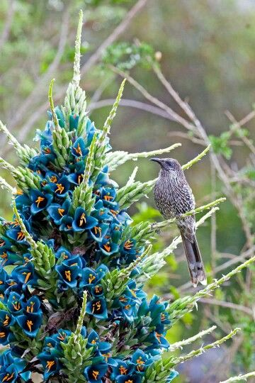

Nuestro Trabajo
Jardines | Paisajismo | Arquitectura Exterior | Diseño y Ejecución
Diseñamos y ejecutamos proyectos de exterior de diversas escalas, integrando paisaje, arquitectura y funcionalidad. Desarrollamos propuestas que van desde jardines residenciales hasta planes maestros para condominios, parques y espacios públicos. Nos interesa especialmente trabajar con materiales locales y vegetación nativa, buscando proyectos que dialoguen de manera sensible con su entorno.
01 — Relación con el contexto y la arquitectura
Entendemos el jardín / espacio exterior como un lugar fundamental en el habitar, en la forma en que nos relacionamos con el contexto y con el medio natural. El jardín es para nosotros un espacio de gran potencial, y nos gusta proponer espacios, actividades y dinámicas de uso. Velamos por hacer espacios integrados al lugar donde se emplazan, procurando una lectura adecuada del emplazamiento (viento, sol, luz, vistas etc…) usar materiales locales, especies nativas (dependiendo de disponibilidad). Consideramos la arquitectura como parte del contexto. Nos interesa proponer jardines con materiales y lógicas que dialoguen y potencien lo arquitectónico y construido.
02 — Baja mantención / consumo hídrico
Ofrecemos un servicio profesional de paisajismo especializado en diseños con bajo requerimiento hídrico, ideales para cuidar el medio ambiente y reducir el consumo de agua sin sacrificar la belleza y funcionalidad de tus espacios exteriores. Nuestro enfoque combina plantas resistentes y autóctonas, sistemas de riego eficiente y técnicas sostenibles que aseguran un jardín atractivo, saludable y de bajo mantenimiento.
Nuestro objetivo es desarrollar espacios construidos y jardines con un enfoque basado en entregar paisajes acogedores, por medio de un buen proceso y comunicación constante con el cliente.


